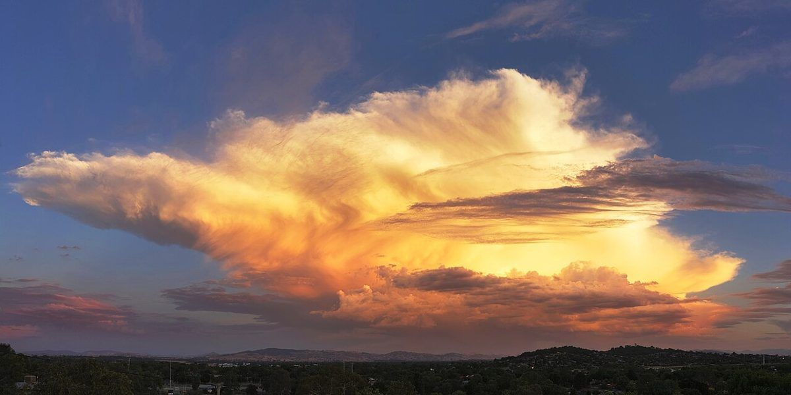

一度、ゆっくり立ち寄ってみたいなと思います。
口コミ
このページの口コミはイメージ例であり、実際のお客様の声ではありません。
制作側が、ページの見え方を示すために作成した文章です。
どんなお店なのか、ページで分かったらうれしいな。
営業時間や場所がすぐ分かるページだったら、友人にも教えたいと思います。

お店の最新の情報は、Instagramでご確認ください。
SAMPLE 制作イメージ用の試作ページです
口コミ
COZY cafeこのページの口コミはイメージ例であり、実際のお客様の声ではありません。
制作側が、ページの見え方を示すために作成した文章です。
一度、ゆっくり立ち寄ってみたいなと思います。
どんなお店なのか、ページで分かったらうれしいな。
営業時間や場所がすぐ分かるページだったら、友人にも教えたいと思います。

お店の最新の情報は、Instagramでご確認ください。
掲載写真はフリー素材のイメージです。店舗の実際の様子ではありません。他地域で撮影された写真や、撮影地が不明な写真を含みます。